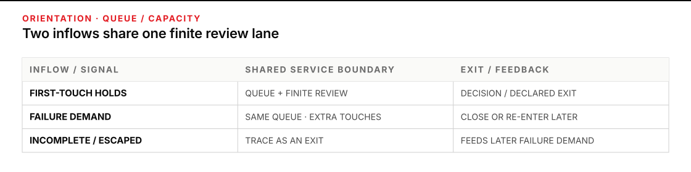
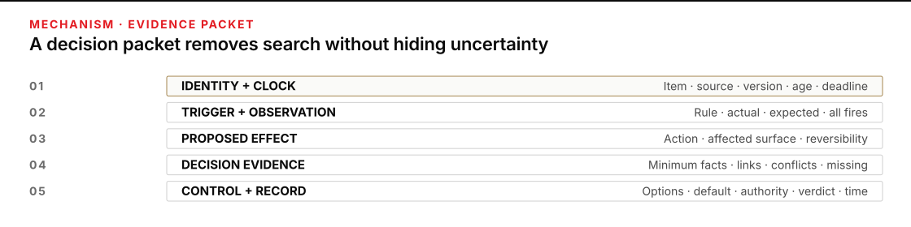
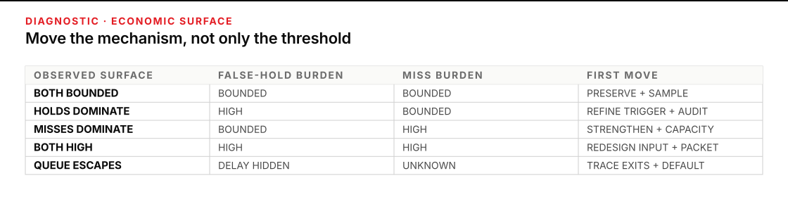

When the human gate becomes the bottleneck
A gate can sit in the right place and still fail. Exceptions may outrun decisions; easy cases may hide long, evidence-poor ones; old items may expire, duplicate, or slip into side channels. Under pressure, careful review becomes a growing queue or a quiet rubber stamp.
Plan for 60–75 minutes. You will build a gate capacity model and an exception evidence-packet specification. The model exposes demand, capacity, variability, rework, age, errors, defaults, and escalation. The packet carries the smallest sufficient decision record.
Complete the gate-placement work in P7 · Going deeper first. Continue once the gated pipeline has already been chosen and you need to know whether its exception lane can carry real work. If the unresolved question is which machine a workload needs, return to P7’s three-way sort first.

Figure transcript
Row one shows first-touch holds entering the review queue and finite human service, then leaving through a recorded decision or declared exit. Row two shows failure demand—missing evidence, unclear return reasons, duplicates, and corrections after misses—entering the same queue as additional touches and either closing or re-entering later. Row three shows incomplete or escaped outcomes being traced as exits and feeding later failure demand rather than being counted as successful completions. Backlog and age arise inside the shared lane when combined arrivals outrun service or arrive in bursts.
Model the gate as a service system
A gate is a finite-service queue. “A person reviews exceptions” is not a capacity plan. Measure what arrives, what returns, how long each class takes, and what happens while it waits.
Keep five quantities separate
- First-touch arrivals enter the gate once during a stated interval. For 800 items and a measured 18% hold rate, plan
800 × 0.18 = 144first-touch holds. Preserve the hourly pattern; a daily mean hides the peak. - Failure-demand arrivals are extra touches caused by incomplete earlier processing: returned missing evidence, duplicates, ambiguous reasons, correction after a miss, or a requester asking again because the queue is opaque. Walley, Found, and Williams apply this lens in a UK primary-care study, while warning against turning it into another reporting number.
- Service time is active reviewer time from open to recorded decision, excluding waiting. Use a distribution or case classes; easy-only samples overstate capacity.
- Available review time is time actually allocated to the gate. An hour containing 15 minutes of other duties supplies 45 review-minutes.
- Backlog and age describe unfinished work. Count both: ten items due next week differ from ten expiring in 20 minutes.
For one reasonably interchangeable review class, calculate:
effective arrivals = first-touch arrivals + failure-demand arrivals
weighted mean service time = Σ(case share × minutes per case)
service capacity = available review-minutes ÷ weighted mean service time
utilization ρ = effective arrival rate ÷ service capacity
end backlog = max(0, start backlog + effective arrivals − completed items)Keep units aligned. Hourly arrivals require hourly capacity. When authority makes reviewers non-interchangeable, model separate lanes; pooled minutes invent unusable capacity.
When ρ ≥ 1, arrivals meet or exceed service under the assumptions, so backlog has no average recovery path. When ρ < 1, the arithmetic is necessary but not sufficient. Bursts, long cases, breaks, priority work, and re-entry can still create a deadline-breaking queue. There is no universal “safe utilization” number. Replay intervals from your own arrival and service evidence and choose reserve against the consequence and deadline you actually have.
Kingman’s classic heavy-traffic result treats near-full load as a distinct waiting-time regime. Do not staff from average demand divided by average speed and call the problem solved.
Use Little’s Law as an audit, not a staffing promise
For a stable system with consistent boundaries and long-run finite averages, Little’s Law relates average work in the system (L), entry rate (λ), and average time in the system (W): L = λW. The conditions matter; read Little’s original proof. Define one population: review touches from queue entry to a declared exit. Under stability, its entry rate equals the total rate of all declared exits—including decisions, returns, expiry, and abandonment—not approvals alone. If 12 touches enter and leave that boundary each hour on average and L=30, then W = 30 ÷ 12 = 2.5 hours.
Do not apply that steady-state relation to one overloaded afternoon and present the result as a forecast. Define whether L includes active review and instrument every exit. If you instead study only a completed-decision cohort, give that cohort its own consistent L, λ, and W. The formula is especially useful for finding inconsistent dashboards: a claimed queue, flow rate, and cycle time that cannot satisfy the relation may be measuring three different systems.
Count abandonment and latency as outcomes
A held item does not always wait politely. It can be withdrawn, expire, be duplicated, bypass the gate through email, or become stale enough that the original evidence no longer supports a decision. Record each outcome and its age. Otherwise a falling queue can masquerade as improved service when work is simply escaping the measurement boundary.
Contact-center research on silent abandonment shows how unobserved departures can distort estimates of customer patience and system efficiency. A review gate is not a contact center, so its reported percentages do not transfer. The useful inference is narrower: disappearance must be instrumented. An item that vanished without a decision is not a successful completion.
Engineer the packet before adding reviewers
An exception evidence packet is the bounded decision record that travels with one hold. It is not a dump of every available field. More material can lengthen service without improving judgment. The packet should expose:
- Identity and clock: stable item ID, source or run ID, received time, current age, decision deadline, and policy version.
- Trigger and observation: the exact rule or check that held, the observed value, the expected condition, and whether more than one check fired.
- Proposed effect: what would happen if the item cleared, who or what would be affected, and whether the effect is reversible.
- Decision evidence: the minimum source facts and links needed for this trigger, plus conflicts, missing facts, and uncertainty. Include structured machine output when relevant; do not substitute an uncheckable explanation for source evidence.
- Control and record: allowed verdicts, named authority, default at the deadline, escalation path, prior attempts, final decision, reason, reviewer, and timestamps.
NIST’s AI Risk Management Framework Core calls for documented human-oversight roles and enough information about system limits and output use to support decisions and subsequent action. The operational test is direct: a new authorized reviewer can decide from the packet, or name the one missing fact, without hunting through the entire pipeline.
Precommit what happens when nobody decides
Every exception class needs a deadline, default, and escalation. “Pending” is not a default; it is an unlabeled state that ages. A default may keep the item held, return it for missing evidence, expire it, or—only under explicit authority and an acceptable consequence—allow it to proceed. The right choice depends on the error costs and cannot be universal. Name the role that receives escalation and the state after the clock expires. If no authorized role can decide inside the useful window, narrow or stop the automated line.
Price all review work and both error consequences
A false hold is an item that could safely have cleared but was sent to review. A miss is an item that should have held but passed. Moving a threshold usually trades one for the other. NIST’s trustworthiness guidance calls for false-positive and false-negative measurement in representative conditions and notes that some failure types cause greater harm than others.
On one frozen, labeled sample, compare candidate rules with one complete cost basis:
total direct workload
= total holds × review work per held item
+ false holds × incremental false-hold consequence
+ misses × miss consequence
+ other included failure-demand workEvery hold consumes review work; the false-hold term adds only avoidable consequences not already counted there, such as delay or expiration. Keep time, money, customer impact, and non-monetary consequences separate, and state exclusions. An unpriced consequence is unknown, not zero. Expected minutes must not average away a rare safety, legal, personnel, access, or irreversible effect. If both false holds and misses are high, the best move is often better input, a better check, or a better packet—not sliding the same threshold.

Figure transcript
Layer one, IDENTITY AND CLOCK, carries item ID, source or run ID, policy version, received time, age, and decision deadline. Layer two, TRIGGER AND OBSERVATION, names the exact rule or check, observed value, expected condition, and every trigger that fired. Layer three, PROPOSED EFFECT, states what clearing would do, who or what is affected, and whether the effect can be reversed. Layer four, DECISION EVIDENCE, presents the minimum source facts and links relevant to the trigger, with conflicts, missing facts, and uncertainty left visible. Layer five, CONTROL AND RECORD, names allowed verdicts, authority, default at deadline, escalation, prior attempts, final verdict, reason, reviewer, timestamps, and resulting state. The packet is complete when an authorized reviewer can decide or name the one missing fact without reconstructing the item elsewhere.
Worked case: the calendar gate with a disappearing queue
A fictional cultural center uses a fixed line to prepare public-calendar updates. Machine checks route conflicts and unsupported changes to an editor before publication. The case is synthetic and non-acting. The team measures one eight-hour day under the current gate policy. To keep the planning arithmetic inspectable, it applies the measured service-time mix to both first-touch and returning touches; a real gate should split those classes when their timings differ.
| Planning input | Observed assumption | Calculation |
|---|---|---|
| Line volume and first-touch holds | 800 updates; 18% hold | 800 × .18 = 144 holds |
| Service-time classes | 70% complete packet at 1.5 min; 20% requires source reopening at 4 min; 10% lacks authority evidence at 9 min | .70×1.5 + .20×4 + .10×9 = 2.75 min |
| Available reviewer time | One editor; 45 review-minutes each hour | 45 ÷ 2.75 = 16.36 touches/hour |
| Failure demand | The 10% missing-evidence class returns once | 144 × .10 ≈ 14 extra touches |
| Effective arrival rate | 158 touches over 8 hours | 158 ÷ 8 = 19.75/hour |
| Average utilization | One pooled review class for this exercise | ρ = 19.75 ÷ 16.36 = 1.21 |
The average alone says the lane is overloaded. The hourly replay shows what the mean hides. For a conservative planning table, the team rounds capacity down to 16 touches per hour and places the 14 re-entries in the intervals when corrected packets actually returned.
| Hour | First touches | Re-entry | Start backlog | Capacity used for plan | End backlog |
|---|---|---|---|---|---|
| 1 | 8 | 0 | 0 | 16 | 0 |
| 2 | 12 | 0 | 0 | 16 | 0 |
| 3 | 15 | 0 | 0 | 16 | 0 |
| 4 | 25 | 0 | 0 | 16 | 9 |
| 5 | 31 | 3 | 9 | 16 | 27 |
| 6 | 23 | 4 | 27 | 16 | 38 |
| 7 | 17 | 4 | 38 | 16 | 43 |
| 8 | 13 | 3 | 43 | 16 | 43 |
The first three hours contain unused capacity that cannot review future arrivals. The day ends with 43 planning-equivalent touches in backlog. Several updates expire; some submitters resend by email. The gate dashboard counts neither outcome, so its reported hold queue falls the next morning even though the service created more work.
Diagnostic example: a smaller queue hides more downstream work
A prior gate-change record shows the team switching to a looser trigger without sampling the cleared lane or tagging outcomes with the rule version that produced them. The visible queue dropped. Published conflicts later required corrections and notifications. The diagnostic signal is a local success metric—fewer holds—paired with rising downstream rework, duplicate contact, and no defensible miss rate.
The team restores the last measured rule, freezes a labeled comparison set, and diagnoses the whole system. The table below uses three candidate rules on the same labeled 800-item synthetic sample, which contains 80 items that should hold. After packet repair, the observed mean review touch is 1.815 minutes. Each miss is assumed to create 80 minutes of direct correction work. For this comparison, direct total = all holds × 1.815 + misses × 80. Four re-entries and other work common to all candidates are excluded; false-hold delay and attendee disruption remain unpriced and visible rather than being called zero.
| Candidate rule | Total holds | False holds | Misses | Gate minutes holds×1.815 | Miss-recovery minutes misses×80 | Direct total |
|---|---|---|---|---|---|---|
| Tighter | 176 | 98 | 2 | 319 | 160 | 479 min |
| Current | 144 | 68 | 4 | 261 | 320 | 581 min |
| Looser | 88 | 19 | 11 | 160 | 880 | 1,040 min |
Under these assumptions, the tighter trigger creates more visible holds but less direct system work. That is a case result, not a general threshold. Its 98 false holds still impose delay, and the unpriced consequence of a miss may dominate the arithmetic. The decision owner records both.
Recover by reducing service time and failure demand
The repaired packet carries the event ID and clock, the exact conflict, compared values, source links, proposed publication, missing facts, allowed verdicts, default, and escalation role. Incomplete identity or authority evidence returns to the submitter before entering the adjudication lane, with the missing field named. Aged items escalate to the duty editor; an item that reaches its publication deadline without an authorized decision remains unpublished.
A new representative sample yields 85% complete packets at 1.5 minutes, 12% source checks at 3 minutes, and 3% escalations at 6 minutes: .85×1.5 + .12×3 + .03×6 = 1.815 minutes. Re-entry falls to four touches a day. Capacity becomes 45 ÷ 1.815 = 24.79/hour; effective arrivals become 148 ÷ 8 = 18.5/hour; and ρ = .75. Replaying the same first-touch bursts, placing one re-entry in each of hours five through eight, and rounding capacity down to 24 produces end backlogs of 0, 0, 0, 1, 9, 9, 3, 0. The team keeps measuring age and escape outcomes; a better modeled day does not certify every future day.
Capacity diagnosis for the terminology gate
A synthetic product-description line holds terminology conflicts before an internal catalog draft. Nothing publishes, sends, purchases, or changes a live record. Use only the supplied facts.
- 1,200 descriptions arrive over six hours.
- The current rule holds 96 first-touch items, arriving by hour as
6, 8, 10, 18, 28, 26. - One terminology reviewer has 48 review-minutes per hour.
- Service classes are 60% complete at 2 minutes, 30% requiring a source check at 5 minutes, and 10% missing a source at 10 minutes.
- Six missing-source items return once during hours five and six. Effective arrivals by hour are therefore
6, 8, 10, 18, 31, 29. For this exercise, returning touches use the same measured service-time mix; split them in real data when they differ. - Any item still undecided at the six-hour boundary remains out of the draft.
Calculate weighted mean service time, hourly capacity, effective arrival rate, utilization, and end backlog. Use capacity rounded down to 12 touches per hour in the interval replay.
Stop condition: stop the exercise if you cannot keep first-touch and re-entry demand separate, if service-time classes do not sum to 100%, or if the default for an undecided item is missing. Do not invent an approval to empty the queue.
Result: weighted mean service time is .60×2 + .30×5 + .10×10 = 3.7 minutes. Capacity is 48 ÷ 3.7 = 12.97 touches/hour. Effective arrivals are (96+6) ÷ 6 = 17/hour, so ρ = 17 ÷ 12.97 = 1.31. Using the conservative capacity of 12, end backlogs by hour are 0, 0, 0, 6, 25, 42. The lane cannot recover under these assumptions.
First response: specify a complete packet and return reason, sample service times again, add bounded overflow capacity for the measured late burst if needed, and preserve the hold default while testing false holds and misses. Cutting the hold rate without measuring misses hides the downstream cost; asking the reviewer to work faster treats a system-design problem as personal effort.
Copy the gate model and packet specification
# Gate capacity model
Gate / decision:
Measurement window and policy version:
Queue boundary (arrival → final exit):
Review classes that cannot share capacity:
| Interval | First-touch arrivals | Failure-demand arrivals | Start backlog | Available review-minutes | Service-time assumption | Capacity | Completed | End backlog | Oldest age | Abandoned / expired / bypassed |
|---|---:|---:|---:|---:|---|---:|---:|---:|---|---|
| | | | | | | | | | | |
Service sample:
| Case class | Share | Active minutes | Share × minutes | Evidence count |
|---|---:|---:|---:|---:|
| | | | | |
weighted_mean_service_time =
effective_arrival_rate =
service_capacity =
utilization_rho =
peak_backlog / oldest_age =
Little's Law consistency check (stable window only) =
Frozen labeled sample ID / window / total N:
Actual-clear count / actual-should-hold count:
Total held / false holds / actual-clear denominator / false-hold rate:
Total cleared / misses / actual-should-hold denominator / miss rate:
Mean review work per hold:
Incremental false-hold consequence (excluding review work):
Miss consequence:
Failure-demand types and counts:
Default and escalation by exception class:
Assumptions that bound this model:
Observed change that forces recalculation:
Decision: HOLD SCALE / TEST / OPERATE WITH BOUNDS
# Exception evidence-packet specification
identity: item_id / run_id / source_id / policy_version
clock: received_at / current_age / decision_deadline
trigger: check_id / rule / observed_value / expected_condition / all_checks_fired
proposed_effect: proposed_action / affected_record_or_party / reversibility
decision_evidence: minimum_fields / source_links_or_snapshots / conflicts / missing / uncertainty
options: allowed_verdicts / correction_path
control: named_authority / default_at_deadline / escalation_role_and_time
history: prior_attempts / duplicate_of / return_reason
decision_record: verdict / reason / reviewer / decided_at / resulting_state
Packet completeness test:
Packet field that may be removed without weakening the decision:
Packet field still missing that forces return or escalation:The capacity model and packet specification belong together. Capacity without packet quality treats rework as fate. A polished packet without an arrival model can still deliver excellent evidence to a queue nobody can clear.

Figure transcript
When false-hold and miss burdens are both bounded, preserve the current rule and continue representative sampling. When false-hold burden is high but miss burden is bounded, refine the trigger or inputs and audit the cleared lane before loosening. When miss burden is high but false-hold burden is bounded, strengthen detection, increase safe holding, or add review capacity without averaging away severe consequences. When both burdens are high, the discriminator, source quality, or evidence packet is weak; redesign the mechanism rather than sliding the same threshold. When the visible queue ages while items expire, abandon, duplicate, or bypass, restore outcome visibility, define defaults and escalation, and repair demand or capacity before interpreting a lower queue as success.
Gate-model acceptance rules
ρ < 1does not prove deadlines will hold. Replay bursts, service-time spread, priority work, re-entry, and age.- Use Little’s Law only for a stable window with one consistent boundary. For
L=30andλ=12/hour,W=2.5 hours. - Returns caused by missing evidence are failure demand, not new customer demand. Count them, then repair the packet or return reason.
- A false-hold or miss rate cannot choose a rule by itself. Compare representative counts and the local time, delay, recovery, impact, and tail consequences.
- A deadline and escalation contact are incomplete without a precommitted resulting state—hold, return, expire, or explicitly authorized proceed—and its owner.
Measure one real exception lane without changing it
Choose a low-consequence gate that already exists: a draft-data correction queue, internal content check, or non-acting routing review. Time-box 30 minutes. Sample one representative window. Record first-touch and failure-demand arrivals by interval, active service time for at least three case classes, actual available review-minutes, backlog age, and every exit—including withdrawal, expiration, duplicate, and bypass.
Keep the first pass read-only. Do not loosen a hold, add automatic approval, or change a production deadline from this worksheet. Draft the minimum evidence packet and replay a candidate capacity change on historical or synthetic items. Stop if the data window is unrepresentative, reviewers serve different authority classes, false holds or misses cannot be labeled, or an item could act before the stated decision.
Return to the decision owner when a miss can affect safety, personnel, money, access, privacy, legal position, external commitments, or an irreversible record; when the default is disputed; when abandonment or bypass hides affected people; or when added capacity would require authority the reviewer does not have. Bring the arrival replay, service sample, oldest ages, escape outcomes, error trade, and one complete packet. “The queue is too long” names a symptom. These artifacts show which mechanism to change.
Sources
- Little · A Proof for the Queuing Formula: L = λW — the original statement, conditions, and proof of the long-run flow relation.
- Kingman · The Single Server Queue in Heavy Traffic — the classic heavy-load result behind the warning against staffing at mean saturation.
- Walley, Found & Williams · Failure demand: An evaluation of concept in UK Primary Care — empirical and interview-based study of demand generated or deflected by service-system design, with stated limits.
- Castellanos, Yom-Tov & Goldberg · Silent Abandonment in Contact Centers — primary research showing why unobserved queue exits can distort capacity and service measures.
- NIST · AI Risk Management Framework Core — human-oversight roles, decision information, risk costs, capacity context, monitoring, feedback, and response.
- NIST · AI Risks and Trustworthiness — representative false-positive and false-negative measurement and consequence-sensitive risk treatment.